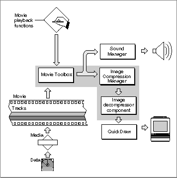

The QuickTime Architecture
QuickTime comprises two managers: the Movie Toolbox and the Image Compression Manager. QuickTime also relies on the Component Manager, as well as a set of predefined components. Figure 1-1 shows the relationships of these managers and an application that is playing a movie.Figure 1-1 QuickTime playing a movie

The following sections discuss these managers in more detail.
Subtopics
- The Movie Toolbox
- The Image Compression Manager
- The Component Manager
- QuickTime Components